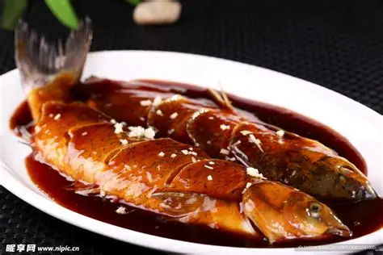
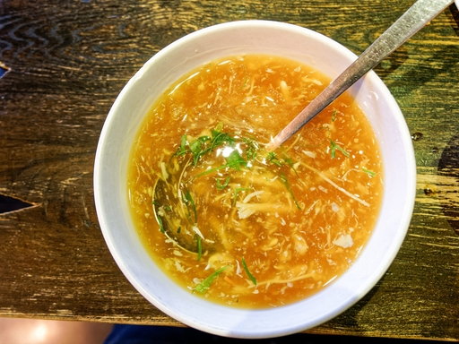
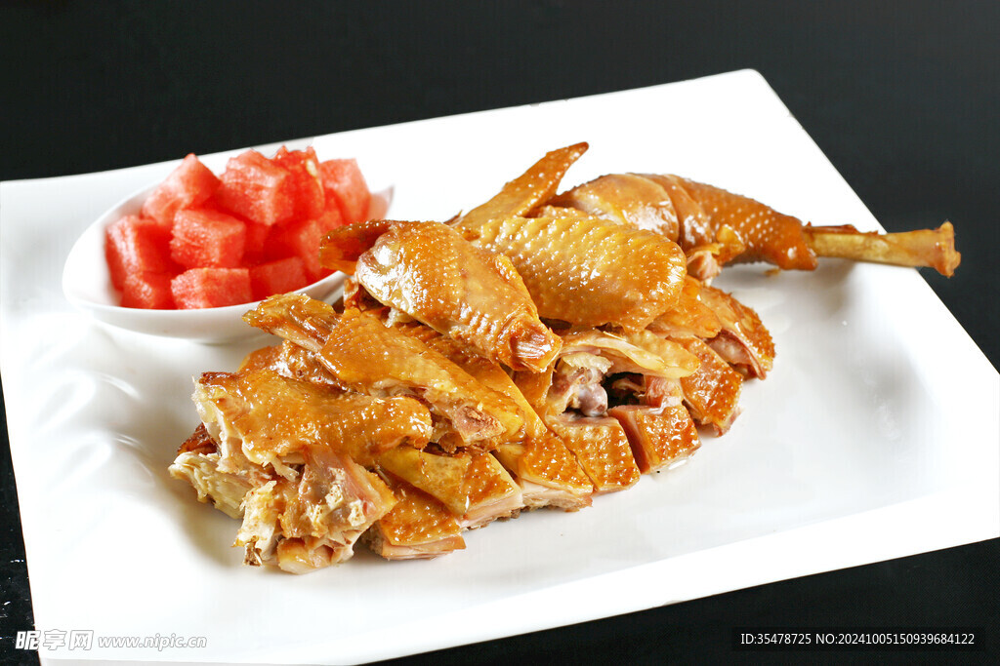
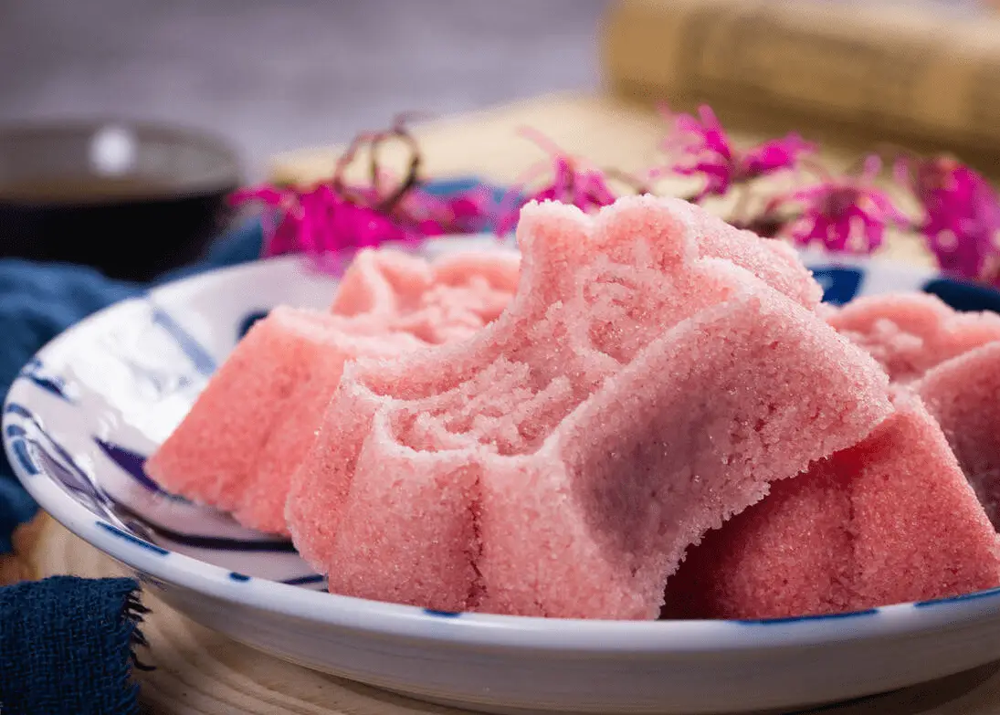

从龙井虾仁到西湖醋鱼 | 千年杭帮菜的雅致与烟火
杭州菜讲究“清淡、鲜嫩、雅致”，汲取西湖山水灵秀与南宋御膳遗风，以茶入馔，以湖鲜为美。龙井虾仁、西湖醋鱼、东坡肉、宋嫂鱼羹……每一道菜都承载着江南文人的诗意与市井的温情。1956年认定的36道杭州名菜，至今仍是老杭州人宴客、游子思乡的味觉符号。
在这里，美食不仅是果腹之物，更是文化与自然的对话。第八种打开方式，从舌尖开始，读懂杭州的风骨与柔情。
龙井虾仁是杭州第一名菜，以鲜活河虾仁与明前龙井嫩芽同炒，虾仁玉白，茶叶碧绿，茶香清幽，虾鲜弹牙。1956年入选杭州36名菜，2018年浙江十大经典名菜，曾多次登上国宴。这道菜体现了杭州“清雅本味”的饮食哲学，也是苏东坡诗意与江南风物的完美结合。

选用西湖草鱼，烹制后浇上平滑油亮的糖醋芡汁，鱼肉嫩滑，酸甜适中，带有独特的蟹味。传说源于南宋“叔嫂传珍”的故事，是杭帮菜的当家花旦。正宗西湖醋鱼讲究“七刀半”，展现江南厨师精湛刀工与火候掌控。
大文豪苏东坡在杭州任职期间创制，精选五花肉，以黄酒、酱油、冰糖慢火焖制数小时，成品色泽红亮，肥而不腻，酥烂如豆腐，入口即化。这一碗肉，既是文人风骨的体现，也是杭州百姓最温暖的记忆。

源自南宋淳熙年间，以鳜鱼或鲈鱼为主料，辅以火腿丝、竹笋、香菇等，汤浓味醇，鲜嫩滑润。相传宋五嫂在西湖边售卖此羹，被宋高宗品尝后赞不绝口，从此成为御膳名菜。千年之后，依然是杭州人宴客时必点的汤羹。

用荷叶包裹整鸡，再以黄泥密封烤制，鸡肉酥烂脱骨，荷香与肉香交融。传说源于乞丐的发明，后被杭州名厨改良，成为独具野趣的杭帮名菜。开坛时香气四溢，是杭帮菜中仪式感最强的菜品之一。

片儿川：杭州最著名的汤面，雪菜、笋片、瘦肉丝，汤头鲜醇，面滑料足，是杭州人每天的早餐灵魂。传说为南宋士子赶考而创，寓意“连中三元”。
定胜糕：米粉包裹豆沙，松软香甜，传为南宋韩世忠犒军点心，象征旗开得胜。如今是杭州人节庆、乔迁必不可少的吉祥糕点。
龙井入菜不仅是龙井虾仁，还有茶香鸡、抹茶糕，杭帮菜擅用本地风物。
宋嫂鱼羹、蟹酿橙、定胜糕，皆从临安御膳房中走来，千年不绝。
春尝河鲜、夏品荷香、秋食蟹膏、冬饮羊肉，顺时而食是杭州人的养生智慧。
从苏东坡到袁枚，文人参与美食创作，让杭帮菜自带诗书气质。
© 杭旅日记 · 第八种打开方式 | 三屏以上的杭州美食长卷 | 茶香诗韵，舌尖江南
本页面呈现杭州经典名菜 | 1956年36道杭州名菜传承 | 国宴风味走入寻常百姓家